I Am Slow When Blowing Against Me
My body became stiff from staying the whole night in the little log cabin.
However, during the whole night it didn’t rain, but all the stuff that was left outside the log cabin is now covered with the morning dew.
There is probably something wrong with my watch. When the watch shows it is not going to rain, it will rain.
And when the watch shows it will rain, and then it might rain, sometimes even 3 days later.
When I got up this morning the weather was pretty good, I can still see the pretty sunrise.
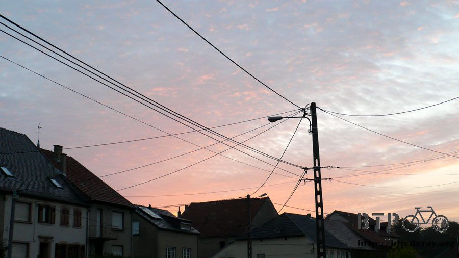
I went to the water pump I found yesterday and used the near frozen water to wipe my face.
My hand became numb when I got the towel wet with the cold water.
Using the frozen cold water to rub my face a bit, and now my whole face became numb as well. Just like this, I am awake.
This is the second day in France, so lets continue to ride.
I still didn’t ride to 150km yesterday, and I entered from Germany, so I actually rode less than what I had planned.
So today I need to work hard and make up for yesterday.
This is the park where I slept yesterday, a few long benches, some toddler duck chairs and the cabin I slept in.
I had already packed up the sleeping bag, but the heavy shirt I used to wrap up my head is still on the table.
Good thing I used the heavy clothing to wrap up my head, or I would get sick from sleeping outdoor in such cold night.
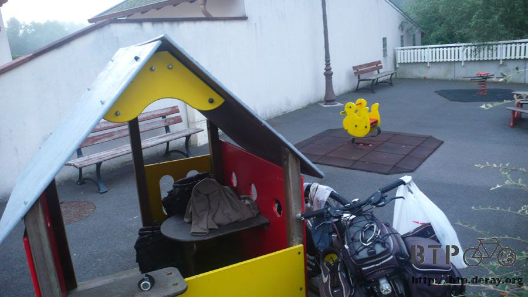
So how cold was it exactly?
Since I already got up, then I can find out. It is almost 8am, the sun has already got up,
but the temperature is about 5 degrees Celsius (41 degrees Fahrenheit). And everywhere is covered with the morning dew
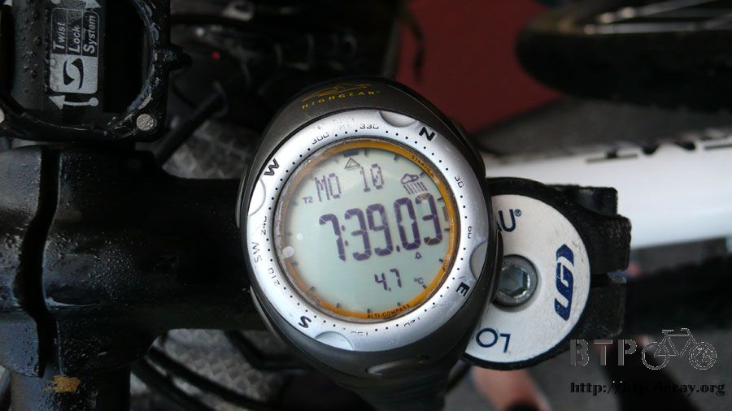
So how cold was it last night, this will always be a mystery.
I don’t want to know either, since this will only make me feel colder.
I had thought after entering France, the cold weather will not be as harsh.
But it looks like both France and Germany got weird weather. People can probably ski on the Alps by now.
After tonight, then I am pretty sure the next few days I cannot camp outside, or there is possibility to freeze to death.
Rubbing my shaking hands against each other, and then looking down at the tire that has lost all its air.
Just like this, no more air in it at all.
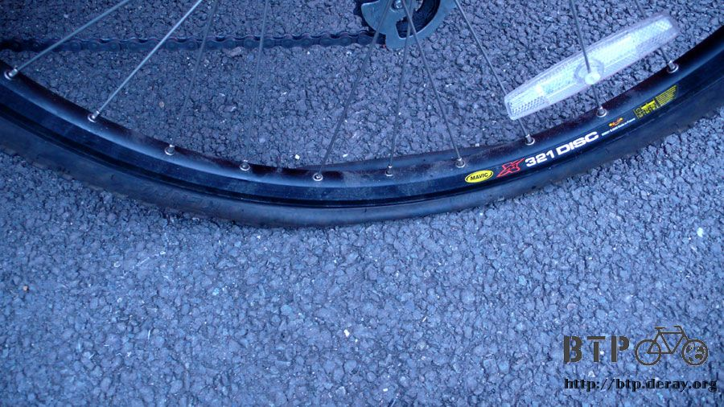
I don’t want to stop to pump air into the tire today, so I should spend time this morning changing a new inner tube,
this way I can carry on a happy feeling while riding.
Even if I am not happy while riding, but at least I won’t get discouraged because of broken inner tube.
This time I finally found the cause of the flat tire. I couldn’t tell from the inner tube,
but I found the scratch on the outer tire. Using a tweezers I picked out a small piece of glass.
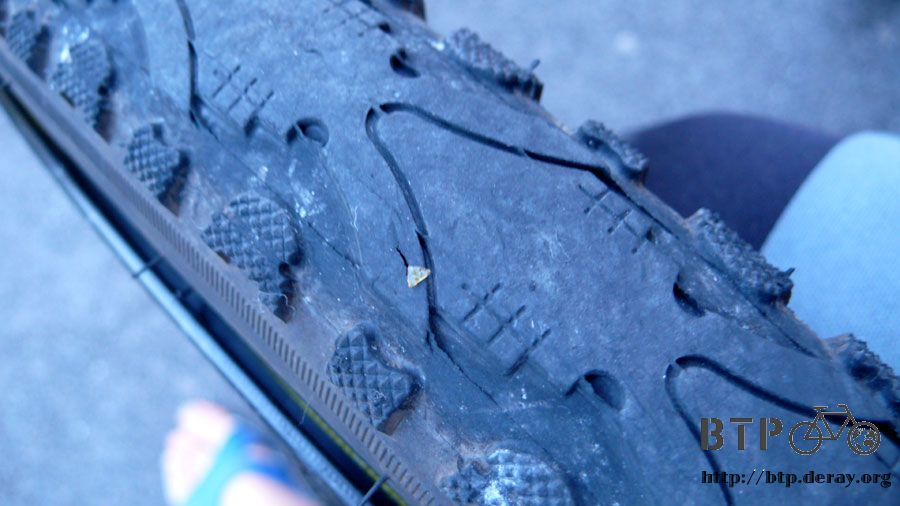
Just this tiny thing, this used up another inner tube.
However, think on the good side, at least I found the cause of the flat tire, so the bike should ride better today, right?
However, this is just my wish, not based on any real facts.
The watch shows it will rain today, but I actually bike against the wind all day.
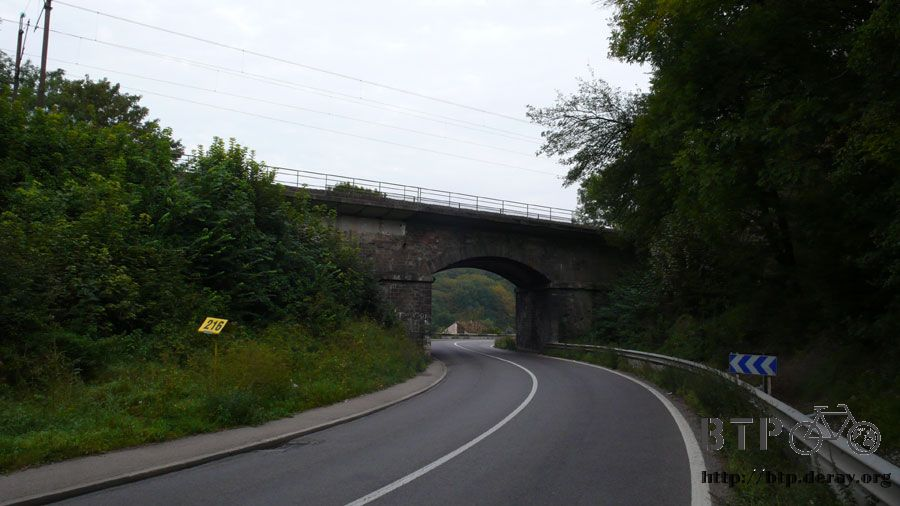
I started riding at 8am, and continued until 9pm. I didn’t stop to rest today,
and the average speed was about 13km/hour (8.08mile/hour), very very slow.
How much I can ride in a day depends on the average speed.
Normally I can ride 15km/hour, but I try to keep it at 18km/hour.
In rough estimation, if I ride 10 hours, then with 18km/hour I can ride about 180km/day (112miles/day),
this is 50km (31 miles) more than riding at 13km/hour.
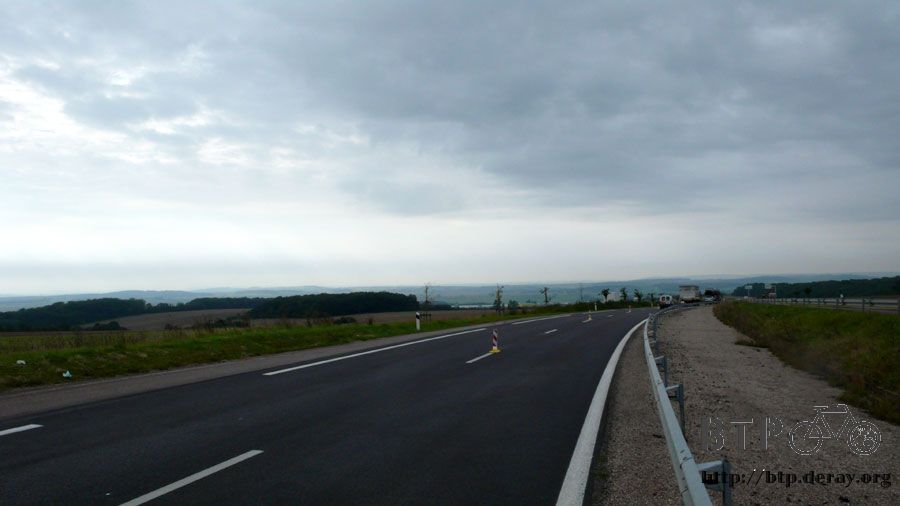
This is huge difference. Even though I rode 10 hours, but it isn’t as easy, the only difference is the total distance I rode is less.
There are few reasons for riding slower, uphill and against the wind.
It is ok with uphill, because there is bound to be downhill, so overall is ok. But riding against the wind has no advantage at all.
Looking at the flat road, but I need to use the same energy I use for riding up the hill, I do not feel happy about it at all.
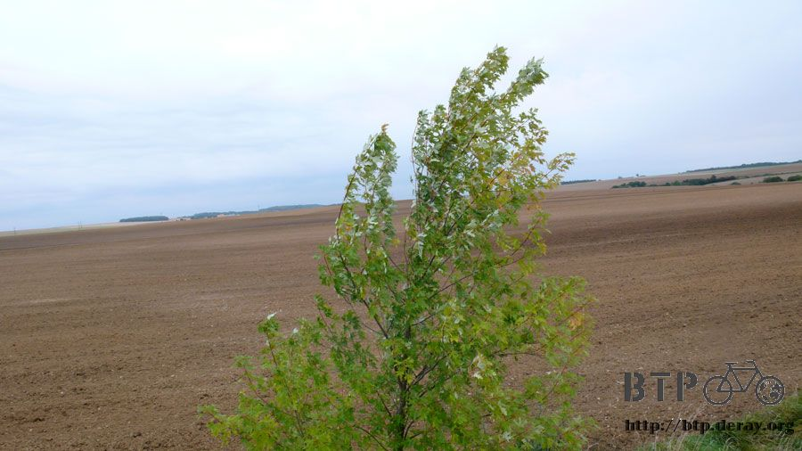
“Plat du Jour” on this sign means the special of the day.
However, after ordering I cannot guess what I would get, just whatever the chef decides to prepare.
Sometimes this also mean self-serve, there are a few dishes that are all you can eat style, about $10 Euro ($15USD),
it isn’t cheap at all. But compared to local living standards, this is the normal cost.

I continue to eat my toast; the French ones are more expensive.
The same 750gram toast cost $0.69 Euro in Germany, but sells for $1.05 Euro ($1.58USD) in France.
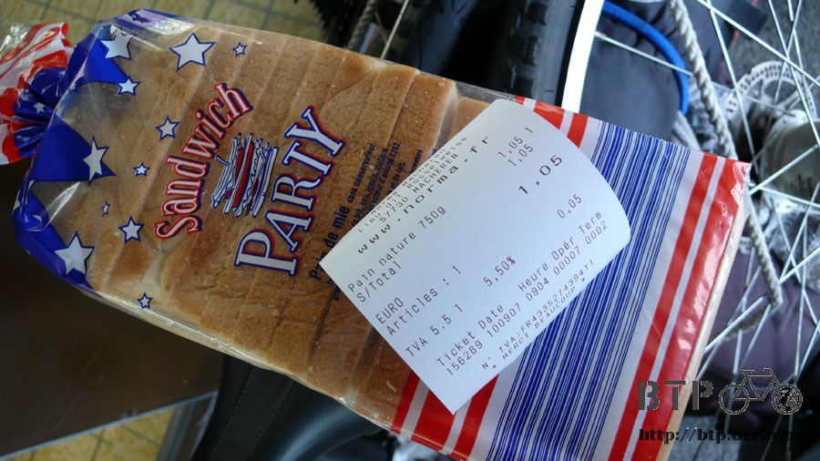
Other than toast, I cannot find anything else that will fill my stomach, this is the only thing that is cheap and will fill my stomach.
I also got a package of fruit candy. After getting these 2 things, I just have $0.63 Euro ($0.94 USD) left,
not even a whole $1 Euro. I am so poor, poor to the point to be cry about it.
After finishing this loaf of bread, I am not sure what I am going to eat for tomorrow and the day after.
Today the whole day I did not find a place where I can exchange currency.
The ad on the side of the road, this probably means by recycling every 4-spray bottle,
there will be 1kg less of carbon dioxide released.
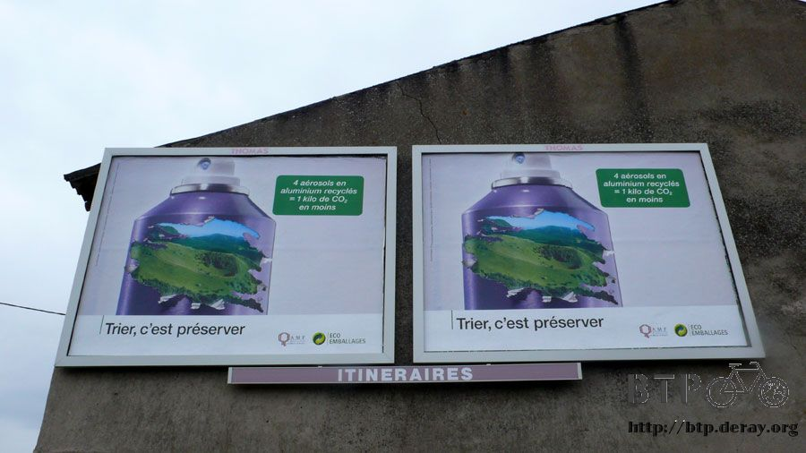
And carbon dioxide is the cause of global warming, so everyone needs to keep recycling on his or her mind.
Just like Germany, when you purchase your soda in plastic bottle, they will charge you extra for the recycling automatically.
The price they charge you for the plastic bottle recycling are almost as expensive as soda,
this way everyone will recycle those things that can be used again.
After entering France, I couldn’t see the store charging for recycling the bottle.
In France they only have posters up, but in Germany they are enforcing recycling, very different.
The whole day is like this weather; some small rain will come down.
This road looks flat, but because I am riding against the wind, it is very difficult to ride.
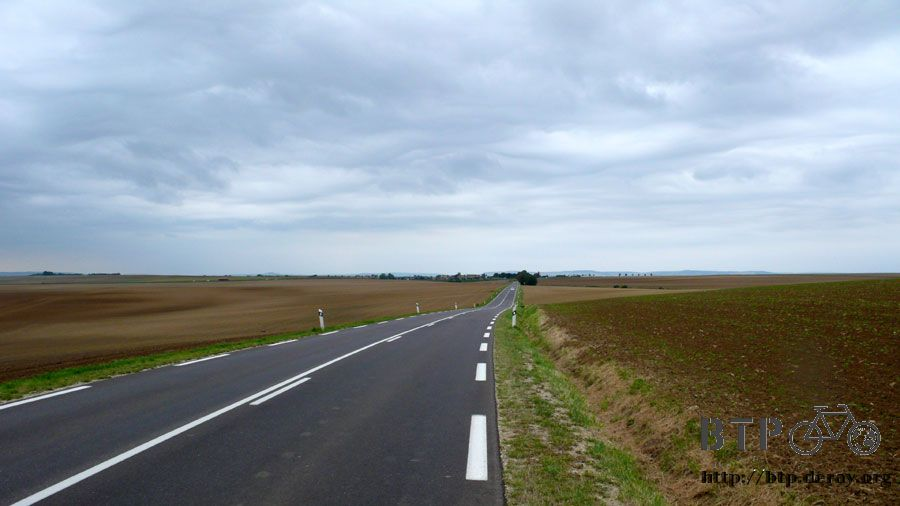
The cloud on the sky is very pretty; the changing shapes looks like some artist made it.
Because the houses will block wind from blowing on me, so once I enter a town it will be easier to ride.
From here I can see something really tall in the distance, something like a castle.
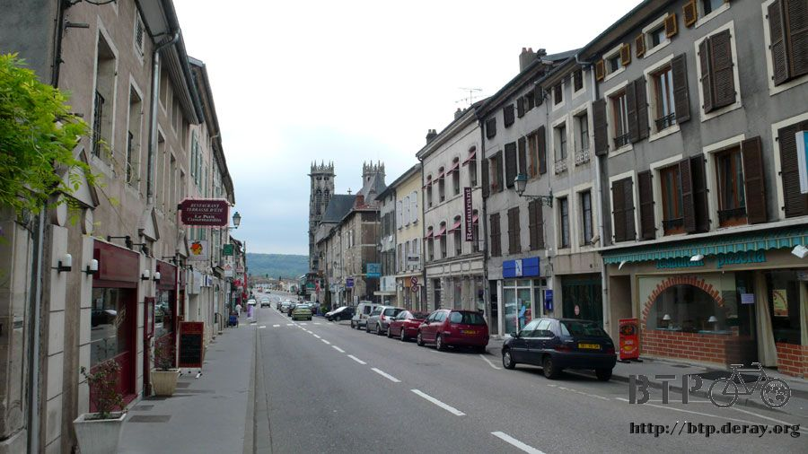
I could see the tall building from the front, so this is probably a church.
But I don’t feel like touring it right now, probably because I have rode against the wind,
so the whole day I couldn’t ride very fast at all.
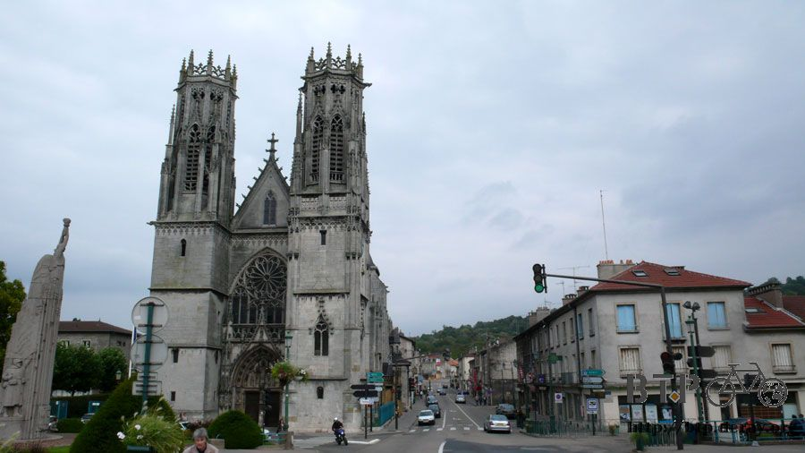
In my mind when I am in France, whenever passing a town, there is a beautiful river flowing through, almost always.

The front entrance with lots of flags hanging is usually city office.
Some are big and some are small, at this point, I don’t know how city offices can help me.
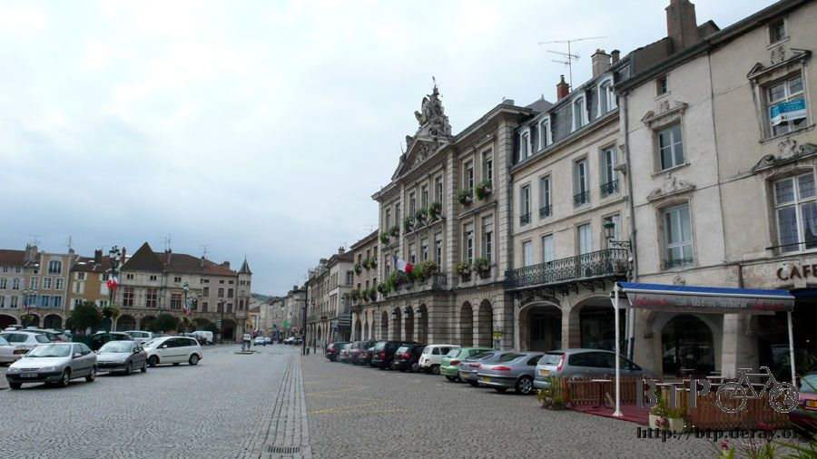
Asking for direction or borrowing maps, I go to the tourist center.
The Internet is available everywhere. Getting water and electricity, I go to the gas station.
But I didn’t discover gas stations today; this is ridiculous, even gas stations are becoming rare.
So I have no water today, I am very thirsty, and feeling down.
The towns I had passed through earlier I didn’t try to get water there, so now I am in trouble.
Eating toast while hungry, but too thirsty so I can’t swallow the toast.
How come the last leg of the road in France is so hard to ride?
The weather is so cold, and I had thought I would freeze to death last night.
The wind is working against me, every time I want to ride more I ended up riding even less.
Afterwards I saw a car repair shop, so I went and asked if they can let me have some water.
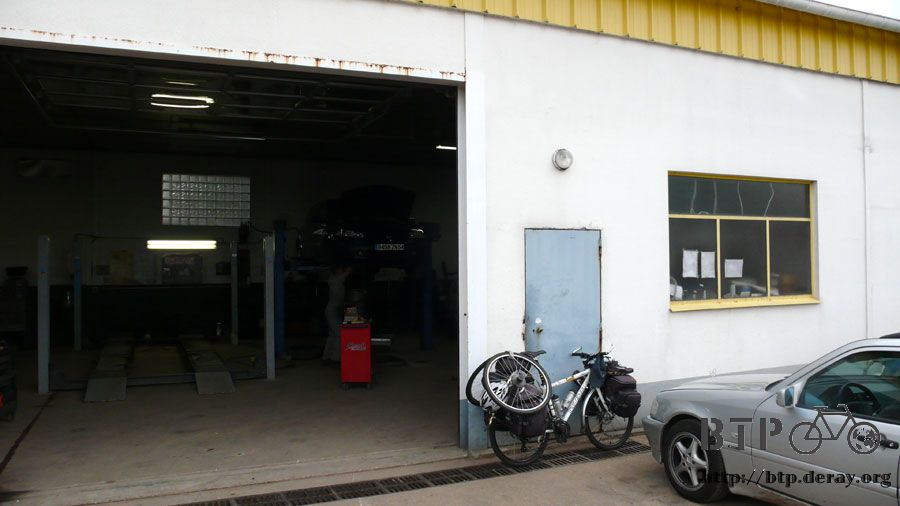
The auto mechanic said sure, and took me to their bathroom.
In France, I can drink the water from the tap, so I can drink however much I would like.
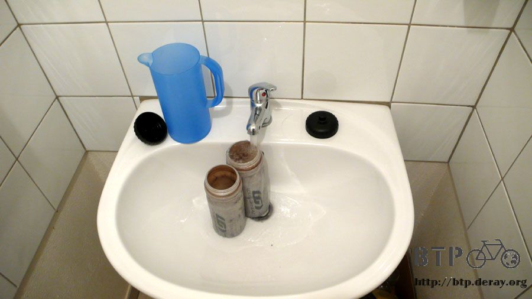
So I filled 2 bottles with water, approximately 1.5L, and took them on the road.
I should be able to last all day today with the 2 water bottles.
It is weird, I was sad earlier, but now after I drink some water, I feel better.
Actually the situation isn’t that bad, even though I ride slow, but at least I am moving.
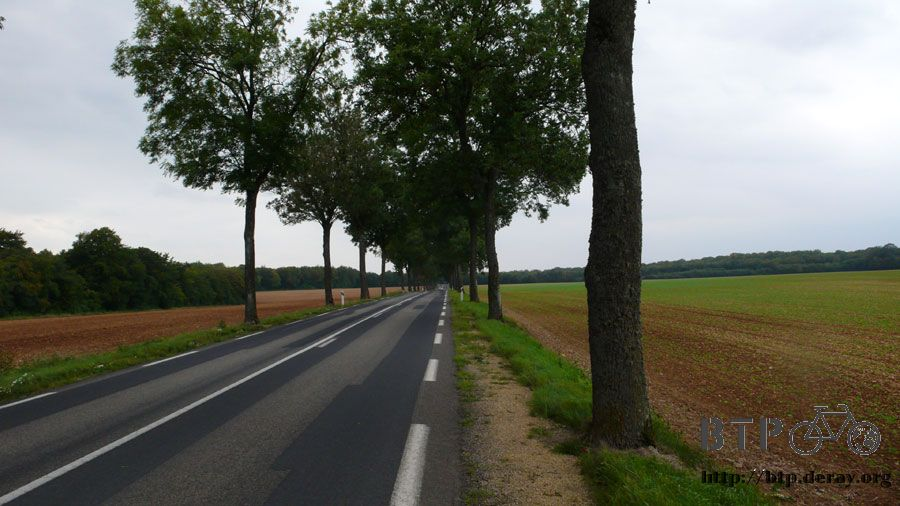
And to think on the positive side, even though it is cold, but at least it isn’t raining.
Just when I was thinking about this, it started raining.
The watch showed it will rain for so many days, and now it really started raining.
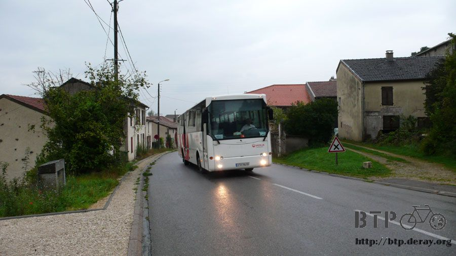
In this cold weather, I am wondering whatever landed on me is rain or snow, maybe sleet?
The air covering in fog after it had rained, it looks like some sort of light gauze covering the mountaintop.
I was riding against the wind earlier on the road you see below, and now I have started riding uphill.
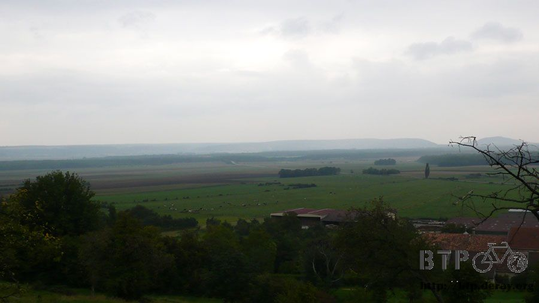
In just short time, the cloud-covered sky now shows some blue in it.
So above this heavy cloud there is a beautiful weather.
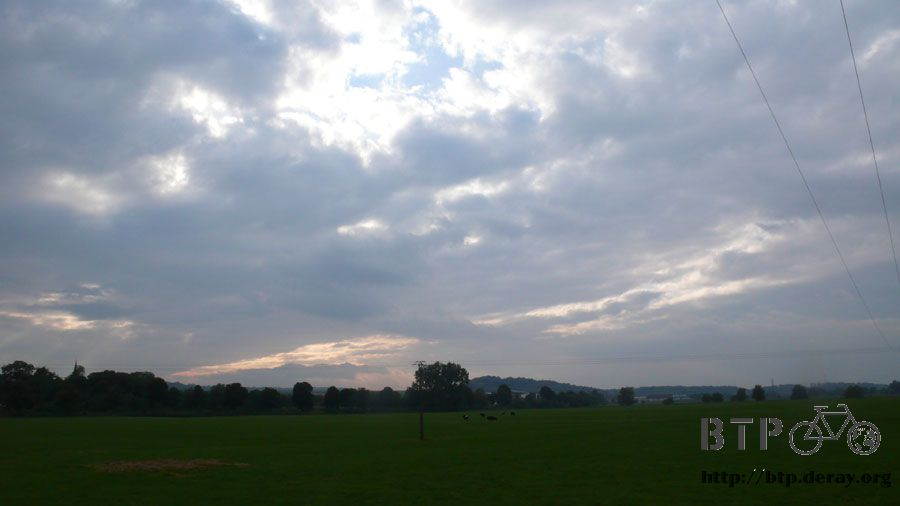
If I am taking a plane and go upward, pass those heavy clouds, then I can probably see lots of bright sunny weather.
Looking down is the ground covered with rain and clouds. In weather like this when will it get sunny again?
Today the sunset came early too, and the whole day other than riding the bike I didn’t do anything else.
But I didn’t get very far, even though I had wanted to ride extra to make up yesterday’s portion,
but I didn’t even ride today’s quota either.
The sunset is very pretty, the reddish-orange sunlight colored the clouds; it looks like the whole forest is on fire
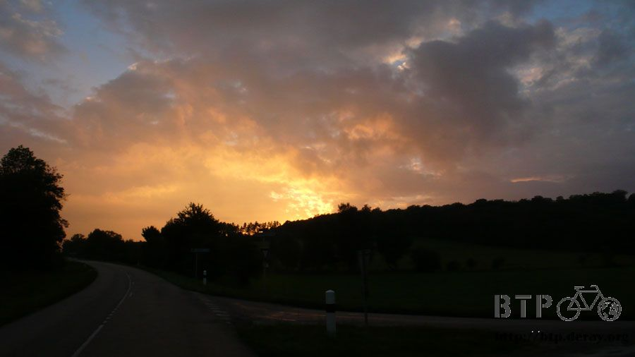
I am disregarding this is cars only road, I need to get up this mountaintop, so I can view this before the sun goes down.
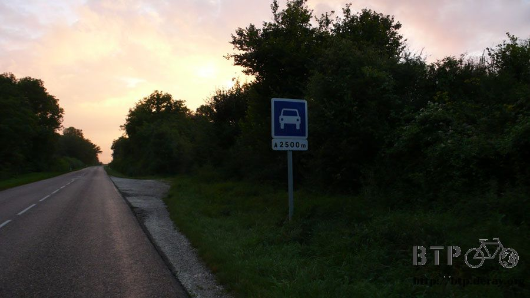
The marking on the cars only path says A2500m, so I had thought cars only path will only last 2500m, but it wasn’t so.
I am disregarding those cars only path right now, I need to get up to the mountaintop,
and record the image right before the sun goes down.
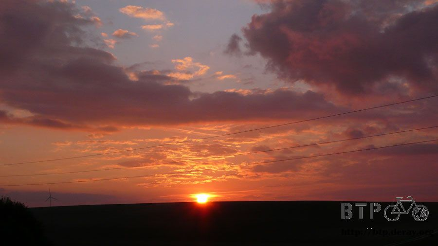
Then I am wondering if my picture taking skill is very bad, or the camera cannot record what I see in nature.
The view I saw on the mountaintop is very different from the picture;
the shock value from the real beautiful scenery is very different.
Standing on top of the mountaintop, I can easily see every moment of the sunset.
The clouds are flowing past fast because of the wind, and everything is moving like it has life.
Other than enjoying good food in the trip,
I feel I am rewarded the most from seeing natural views like this, every sunrise and sunset,
each one is different, each requires to experience it with the heart.
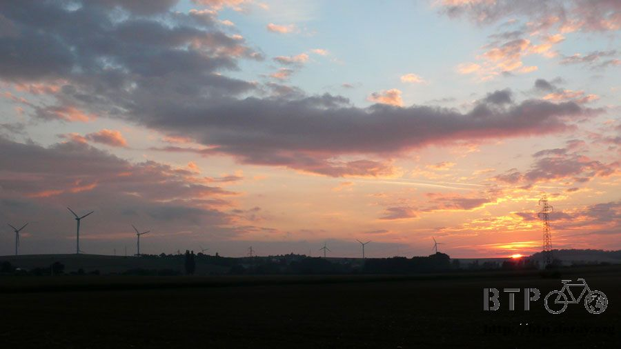
The wind powered machine is seen everywhere in France, and they also flash with light.
Even though it is neat to see them turn and turn, but this also means the wind blows very heavy here.
Riding through with the bike is very difficult. The sun is almost disappearing; the clouds are constantly ever changing.
The plane that flew by left a streak of clouds behind it, it is like putting some marking for this view.
After riding through this cars only path, what lies ahead for me is cars only path again.
However, I need to get past this in order to continue my trip, otherwise I will just stuck here.
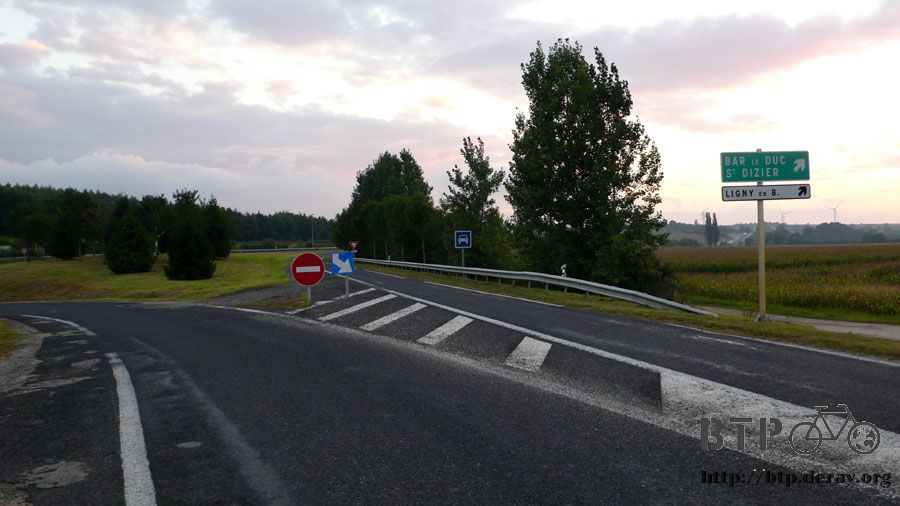
The corn field on the side of the road, even though the road condition isn’t very good, but it is rideable.
I continue to ride in the little path on the side of the road.
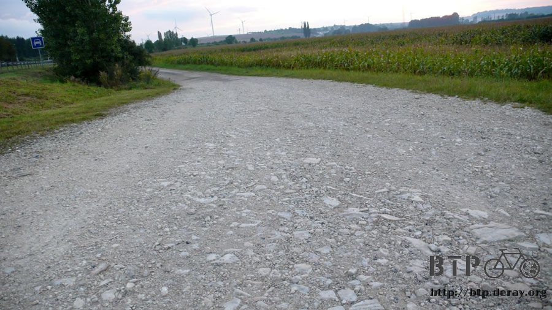
The little path ends and meet up with the big road,
this is the intersection of some big road, lots of signs prohibiting me to pass by, so I ended up riding along the exit.
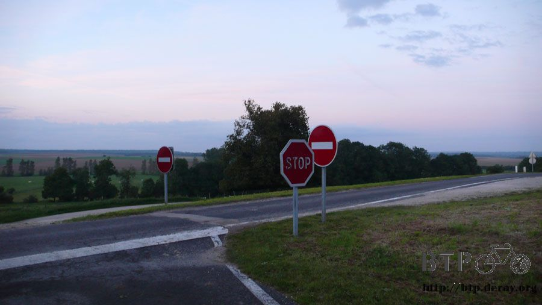
I couldn’t find where I am from the map, this road is not seen from the map either,
so I need to find where I am and continues to ride toward a city.
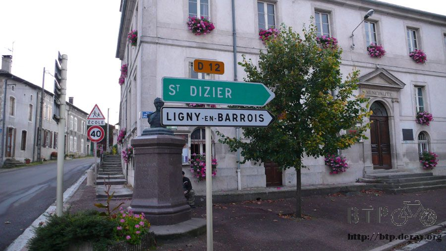
I had not planned to ride through St. Dizier, but since I had no choice, whatever I can ride I will ride.
I am afraid when I have nowhere to ride, then it will be pitiful.
Before 9pm the city is in dark again, of course it gets dark in the evening, but to me it is like a curse.
Because when curse starts, then I cannot ride anymore. Besides, the temperature will continue to go down, faster than park slides.
During the day the temperature is about 15C (59F), but in the evening it is around 10C (50F), and continue to drop.
The previous night I spent it in the mini log cabin.
Even though there is roof covering, but if it really did rain, I wonder how good of a shield would it be.
So I must find a decent place to sleep tonight, if there is a hotel here that accepts credit card,
then I wouldn’t be able to resist, swiping my credit card for a nice room.
But I had already predicted what would happen after,
I would spend the whole night writing the travel journal, and just few hours of sleep,
in order to ride more I would leave very early in the morning.
Spending lots of money for lodging, but not really enjoying it,
so I better find an empty place to spend the night, I would probably sleep better anyway.
I didn’t find a hotel, or an empty house, but I did find a huge storage shed outside of the town.
It is very clean inside, but dust is not avoidable. However, in cleanness like this, it means someone do use it.
The doors of the storage shed are about 2 floors high, and it isn’t closed, so I just enter without asking.
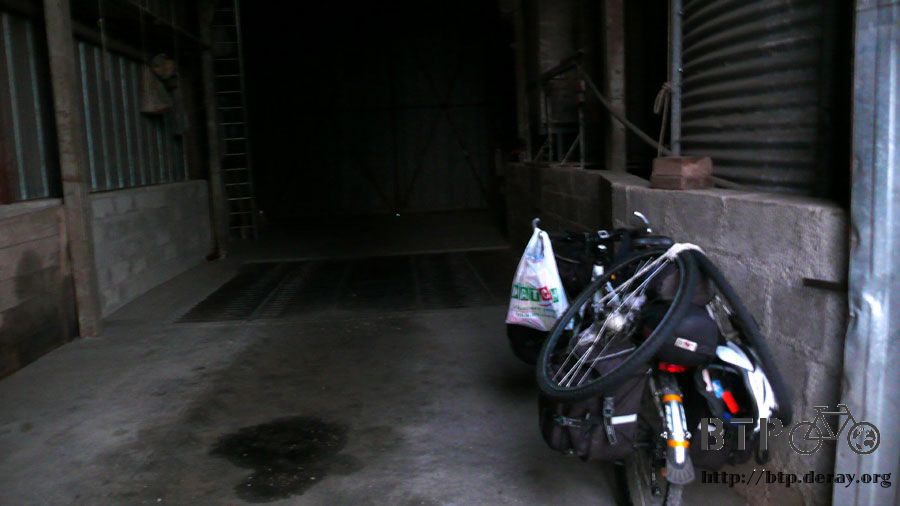
After entering if found a small corner to spend the night. Even if someone passes by, I am not noticeable from the outside.
If someone does come inside, then I will explain whom I am.
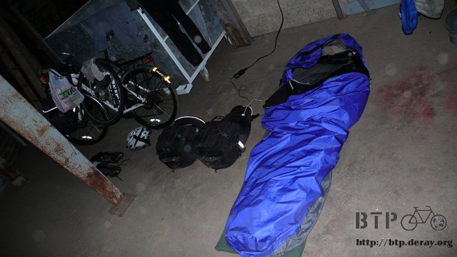
Using the flashlight to show my way, there is enough room to sleep inside.
I took out all my camping gear, there is roof covering tonight so I can sleep well.
If it does rain, then I wouldn’t need to worry about getting wet, and getting stiff and numb from the cold.
When I got in the sleeping bag it felt like a cold bath.
Because it had just rained, the sleeping bag and the clothing on me has some light moisture on it, so it is quite cold.
Use my body slowly warm things up, and the sleeping bag keeps the warmth in.
After I got warm, I slowly became sleepy. Without any resistance, I entered my dream.
Regardless how cold it was during the night, as long as I can open my eyes in the morning, then it will be a brand new day.